The International Pacific Halibut Commission (IPHC) was established in 1923 by a Convention between the governments of Canada and the United States. Its mandate is research on and management of the stocks of Pacific halibut (Hippoglossus stenolepis) within the Convention waters of both nations.
Annual setline surveys are IPHC scientific surveys that collect standardized data used for halibut stock assessment. This information is used to study aspects of the halibut such as growth, distribution, biomass, age composition, sexual maturity, and relative abundance of other species. Current setline surveys cover 11 regulatory regions, from northern California to the Bering Sea including the Aleutian Islands. The IPHC has conducted standardized setline surveys in selected areas during most years since 1963 (with a break from 1987 to 1992). The majority of the current survey station design and sampling protocols have been consistent since 1998.
This interactive web map displays the station locations and regulatory areas where the annual setline surveys occur. The data used in this exploratory analysis are from 1998 through 2015, and include total count and weight of fish at each survey station. Halibut count data were not available for the years 1998 through 2001 and therefore percentages based on amount over 32 inches could not be computed for those years.
Data for this map is available at the IPHC website. Map design and data analysis were completed by Lis Fano.

Year:
Number of halibut:
Total pounds:
Percent halibut over 32in: %
Pounds over 32in:
Total pounds: 1998 – 2015